Как рассчитать объемы работ: простые формулы и алгоритмы для точных расчетовЛокальный архив курса
Как считать объемы строительных работ без ошибок
Земляные работы: формулы и тонкости
В этом курсе всего за пять уроков вы научитесь грамотно и безошибочно считать объемы работ. В этом вам помогут формулы и алгоритмы для точных расчетов от действующего эксперта стройконтроля Веры Сафуановой. После каждой формулы вы будете самостоятельно осуществлять расчет на специальных тренажерах, а в конце курса даже сможете решить интерактивный кроссворд, чтобы с легкостью сдать финальный тест. Желаем успехов!
Вера СафуановаЭксперт строительного контроля с опытом работы в строительной сфере более 15 лет
Земляные работы – основа любого строительного проекта, и именно от правильного подсчета будут зависеть объемы работ, а также объемы сыпучих материалов, которые будут поданы в выполнении и предъявлены к оплате. Как грамотно рассчитать эти объемы, чтобы закрыть все затраты, рассмотрим ниже.
Земляные работы включают в себя следующие виды:
срезка растительного слоя;
разработка траншей и котлованов;
устройство насыпей;
обратная засыпка;
вывоз излишков и завоз грунта для обратной засыпки.
Срезка растительного слоя
Этот вид работ подразумевает снятие плодородного слоя почвы при подготовке участка под строительство, грунт вывозят на постоянные или временные места хранения или используют для других целей. Толщину слоя указывают в проекте.
Если земляных работ нет или они не указаны в ВОР, то необходимо разработать траншеи и котлованы общим объемом
Так как толщина растительного слоя в среднем 200 мм и снятие производят без откосов, такой объем рассчитывается по следующей формуле.
Формула расчета объема работ по срезке растительного слоя
Формула расчета объема работ по срезке растительного слоя · страница 1. Статический снимок исходной интерактивной страницы; интерактивность не воспроизводится.
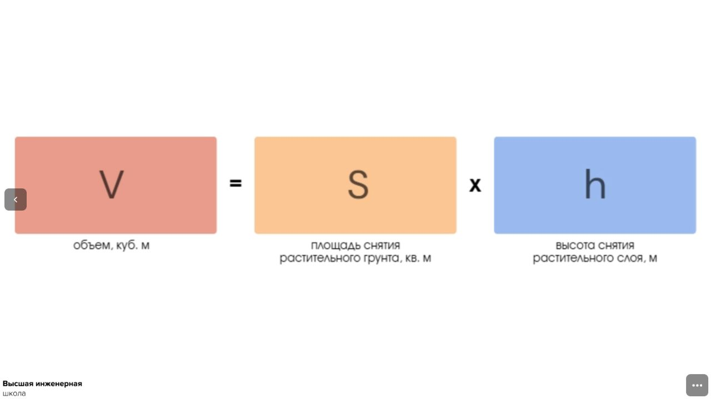
Формула расчета объема работ по срезке растительного слоя · страница 2. Статический снимок исходной интерактивной страницы; интерактивность не воспроизводится.
Открыть оригинал. Интерактивная проверка доступна на исходной площадке.
Упражнение 1
Название не указано
Извлечённые данные задания. Проверка ответов здесь не работает.
Посчитайте объем работ по срезке растительного слоя, где площадь снятия растительного грунта = 64 кв. м, а высота снятия растительного слоя = 200 мм (Ответ впишите слитно)
Открыть оригинал. Интерактивная проверка доступна на исходной площадке.
Разработка котлованов
Самый точный способ расчета котлованов и траншей – взять значение площади из графической программы AutoCad или Nanocad.
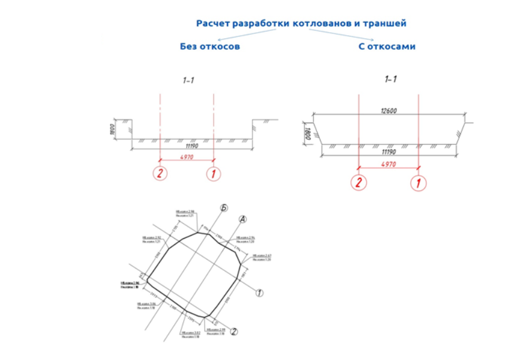
Схема разработки котлованов и траншей
Исходное изображение недоступно. Адрес источникаКогда откосов нет, объем рассчитывают так же, как в случае с растительным грунтом.
Глубину котлована рассчитывают по следующей схеме.
Формула расчета глубины траншеиФормула расчета глубины траншеи
Формула расчета глубины траншеиФормула расчета глубины траншеи · страница 1. Статический снимок исходной интерактивной страницы; интерактивность не воспроизводится.
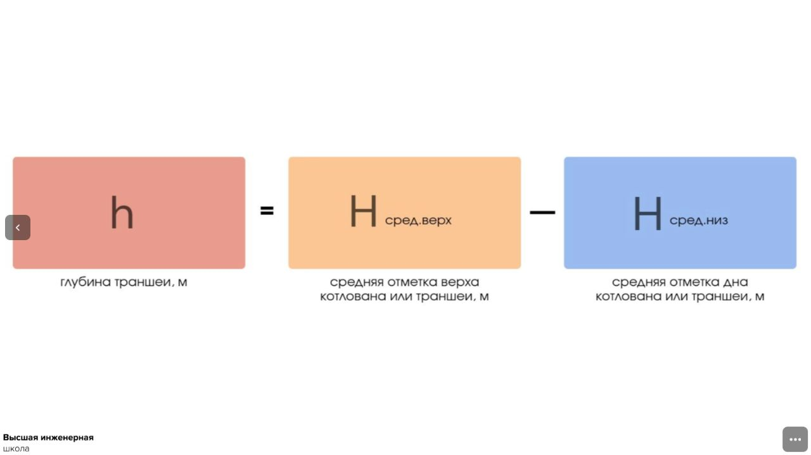
Формула расчета глубины траншеиФормула расчета глубины траншеи · страница 2. Статический снимок исходной интерактивной страницы; интерактивность не воспроизводится.
Открыть оригинал. Интерактивная проверка доступна на исходной площадке.
Упражнение 2
Название не указано
Извлечённые данные задания. Проверка ответов здесь не работает.
Определите глубину котлована/траншеи, где средняя отметка верха котлована/траншеи = 2,94 м, а средняя отметка дна котлована/траншеи = 1,19 м (Ответ впишите слитно)
Открыть оригинал. Интерактивная проверка доступна на исходной площадке.
Среднее значение вычисляют по следующей формуле.
Формула расчета среднего значения для верхней и нижней частей котлован
Формула расчета среднего значения для верхней и нижней частей котлован · страница 1. Статический снимок исходной интерактивной страницы; интерактивность не воспроизводится.
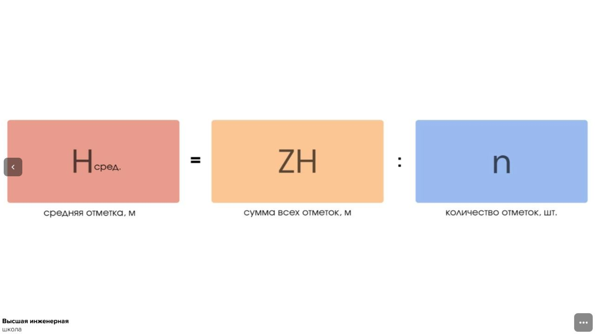
Формула расчета среднего значения для верхней и нижней частей котлован · страница 2. Статический снимок исходной интерактивной страницы; интерактивность не воспроизводится.
Открыть оригинал. Интерактивная проверка доступна на исходной площадке.
Упражнение 3
Название не указано
Извлечённые данные задания. Проверка ответов здесь не работает.
Определите среднее значение для верхней и нижней частей котлована, где сумма всех отметок = 23,52 м, а количество отметок = 8 шт. (Ответ впишите слитно, одним числом)
Открыть оригинал. Интерактивная проверка доступна на исходной площадке.
В случае когда котлован разработан с откосами, можно использовать две формулы.
Вариант 1. Необходимо найти среднее значение площади.
Формула расчета объема траншей и котлованов с откосами
Формула расчета объема траншей и котлованов с откосами · страница 1. Статический снимок исходной интерактивной страницы; интерактивность не воспроизводится.
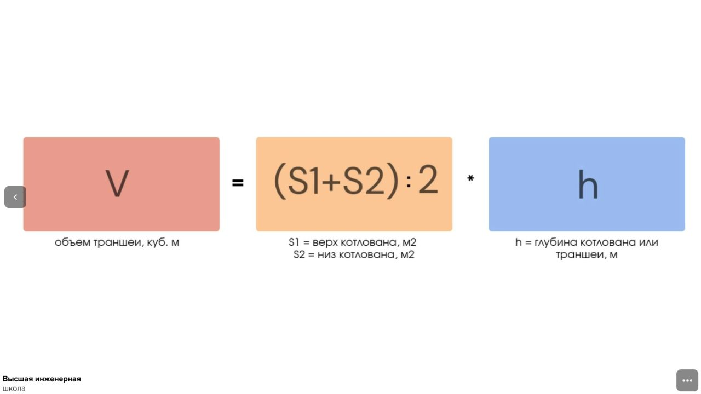
Формула расчета объема траншей и котлованов с откосами · страница 2. Статический снимок исходной интерактивной страницы; интерактивность не воспроизводится.
Открыть оригинал. Интерактивная проверка доступна на исходной площадке.
Упражнение 4
Название не указано
Извлечённые данные задания. Проверка ответов здесь не работает.
Рассчитайте объем траншей и котлованов с откосами, где верх котлована = 76,29 м, низ котлована = 53,27 м, а глубина котлована или траншеи = 1,75 м. (Ответ впишите слитно, одним числом)
Открыть оригинал. Интерактивная проверка доступна на исходной площадке.
Вариант 2. Используем формулу расчета объема усеченной пирамиды.
Формула
Формула расчета объема усеченной пирамиды
Формула расчета объема усеченной пирамиды · страница 1. Статический снимок исходной интерактивной страницы; интерактивность не воспроизводится.
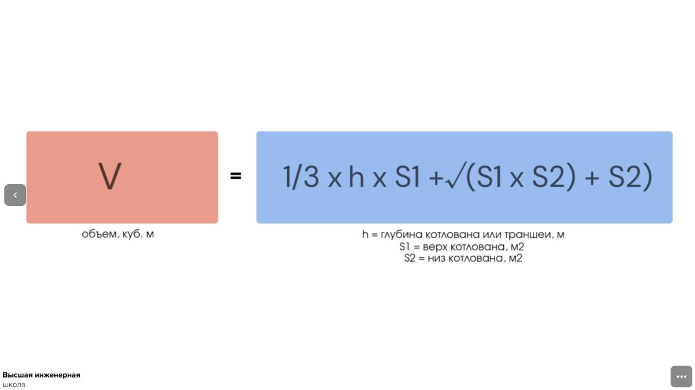
Формула расчета объема усеченной пирамиды · страница 2. Статический снимок исходной интерактивной страницы; интерактивность не воспроизводится.
Открыть оригинал. Интерактивная проверка доступна на исходной площадке.
Упражнение 4
Название не указано
Извлечённые данные задания. Проверка ответов здесь не работает.
Рассчитайте объем усеченной пирамиды, где глубина котлована или траншеи = 1,75 м, верх котлована = 76,29 м, а низ котлована = 53,27 м. (Ответ округлите до двух знаков после запятой)
Открыть оригинал. Интерактивная проверка доступна на исходной площадке.
Разработка траншей
При подсчете объема траншеи можно использовать те же способы, что и при расчете котлована, но это будет актуально, если будут данные съемки верха, а при наличии откосов – еще и низа траншеи.
Но можно пойти и другим путем, используя следующую формулу:
Формула расчета объема траншеи
Формула расчета объема траншеи · страница 1. Статический снимок исходной интерактивной страницы; интерактивность не воспроизводится.
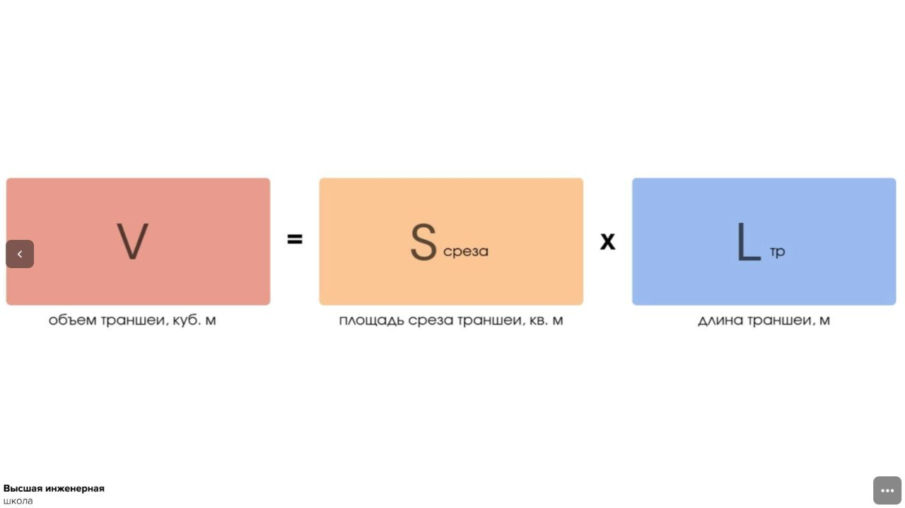
Формула расчета объема траншеи · страница 2. Статический снимок исходной интерактивной страницы; интерактивность не воспроизводится.
Открыть оригинал. Интерактивная проверка доступна на исходной площадке.
Упражнение 5
Название не указано
Извлечённые данные задания. Проверка ответов здесь не работает.
Рассчитайте объем траншеи, где длина траншеи = 100 м, а площадь среза траншеи = 1,4 кв.м. (Ответ впишите слитно, одним числом)
Открыть оригинал. Интерактивная проверка доступна на исходной площадке.
Площадь среза вычисляем по следующим формулам.
Формула расчета площади среза
Формула расчета площади среза · страница 1. Статический снимок исходной интерактивной страницы; интерактивность не воспроизводится.
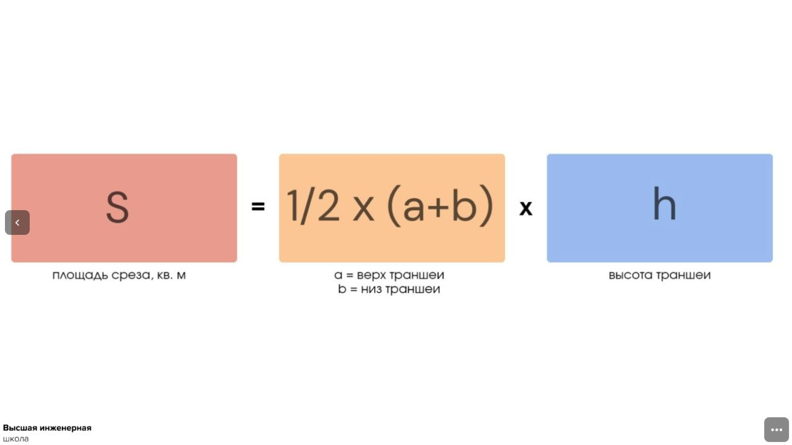
Формула расчета площади среза · страница 2. Статический снимок исходной интерактивной страницы; интерактивность не воспроизводится.
Открыть оригинал. Интерактивная проверка доступна на исходной площадке.
Упражнение 5
Название не указано
Извлечённые данные задания. Проверка ответов здесь не работает.
Рассчитайте площадь среза, где ширина траншеи = 0,9 м, а высота = 1,56 м. (Ответ впишите слитно, одним числом)
Открыть оригинал. Интерактивная проверка доступна на исходной площадке.
Формула расчета площади среза для траншеи с откосами
Формула расчета площади среза для траншеи с откосами · страница 1. Статический снимок исходной интерактивной страницы; интерактивность не воспроизводится.
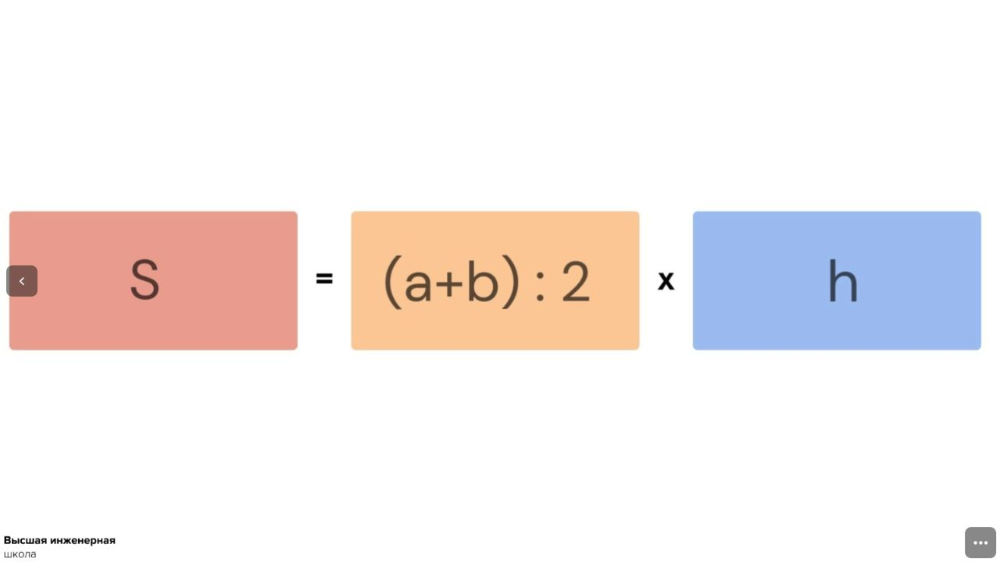
Формула расчета площади среза для траншеи с откосами · страница 2. Статический снимок исходной интерактивной страницы; интерактивность не воспроизводится.
Открыть оригинал. Интерактивная проверка доступна на исходной площадке.
Упражнение 5
Рассчитайте площадь среза траншеи с откосами
Извлечённые данные задания. Проверка ответов здесь не работает.
Рассчитайте площадь среза траншеи с откосами, где ширина верха траншеи = 2,02 м, ширина низа траншеи = 1,56 м, а высота = 1,98 м (Ответ округлите до двух знаков после запятой)
Открыть оригинал. Интерактивная проверка доступна на исходной площадке.
При подсчете объема траншеи следует учитывать, что если перепад высоты траншеи на всем участке от 20 см, то считать объем следует захватками, так как подсчет на всю длину траншеи даст большую погрешность.
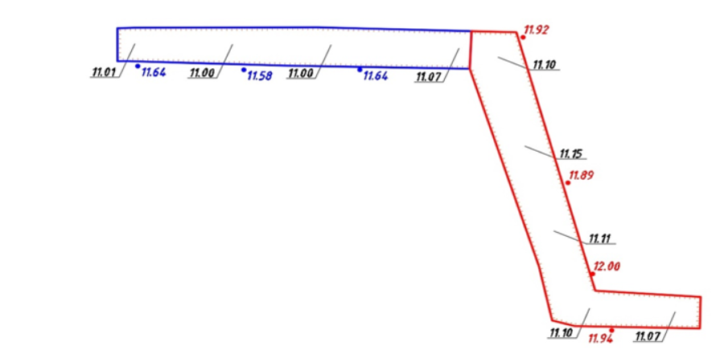
Схема расположения траншеи
На рисунке траншея разделена на две захватки, так как разница между красными и синими отметками поверхности составляет около 40 см. Если найти общую среднюю отметку обеих захваток и от нее рассчитать высоту, то итоговый объем получится с большой погрешностью.
Особенности обратной засыпки
Проще собрать объемы по всем конструкциям последовательно по актам скрытых работ (АОСР). Собрать объем в котлованах проще, так как все подсыпки и конструкции закрываются в кубических метрах. А при прокладке трубопроводов необходимо вычислять объем извещаемого трубой грунта, так как трубы процентуются в метрах.
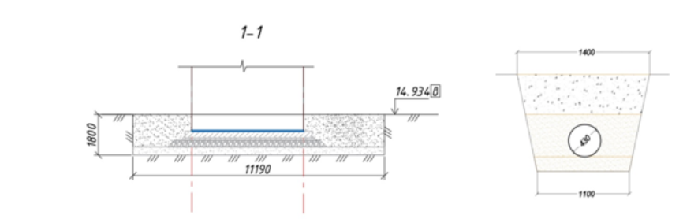
Схема обратной засыпки
Формула расчета объема обратной засыпки
Формула расчета объема обратной засыпки · страница 1. Статический снимок исходной интерактивной страницы; интерактивность не воспроизводится.
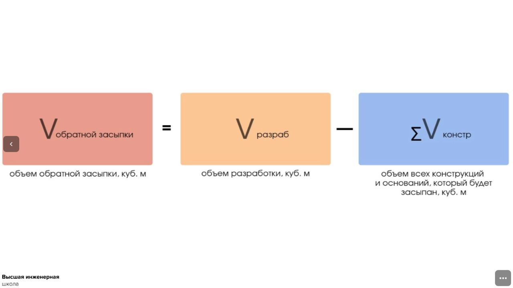
Формула расчета объема обратной засыпки · страница 2. Статический снимок исходной интерактивной страницы; интерактивность не воспроизводится.
Открыть оригинал. Интерактивная проверка доступна на исходной площадке.
Упражнение 6
Название не указано
Извлечённые данные задания. Проверка ответов здесь не работает.
Рассчитайте объем обратной засыпки, где объем разработки = 132 куб. м, а объем всех конструкций и оснований, который будет засыпан = 25 куб. м. (Ответ впишите слитно, одним числом)
Открыть оригинал. Интерактивная проверка доступна на исходной площадке.
При завозе сыпучих материалов нередко происходят несостыковки в объемах, так как количество загруженного поставщиком материала может отличаться от документов. Например материала меньше, а по документам больше. При выгрузке материала выборочно с помощью замера геодезистом одной выгрузки привозного грунта можно проверить весь поставленный объем.
Применяйте простые формулы в зависимости от типа котлованов и траншей
Подсчеты земляных работ – это простая математика, нужно применять простые формулы в зависимости от типа котлованов и траншей. Но есть одно важное уточнение: при закрытии работ в смете работа учитывается физическим объемом, а материал можно указывать с коэффициентом на уплотнение. Это же касается и обратной засыпки – объем, замещаемый конструкциями и основаниями, должен быть взят физический, без учета коэффициента.